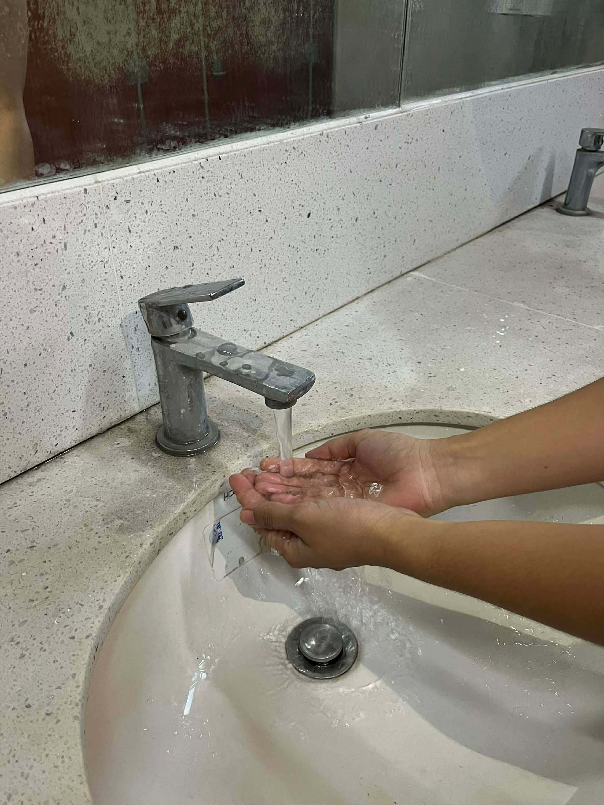

Module 1: When to Perform Hand Hygiene
Understanding when to perform hand hygiene is just as important as knowing how. The WHO recommends hand hygiene at specific critical moments in patient care.
⏰ Before Touching a Patient
Why: To protect the patient from germs on your hands
Scenario: Before greeting a patient, checking vital signs, or starting treatment
🔬 Before Aseptic Procedures
Why: To maintain a sterile field and prevent infection
Scenario: Before inserting a catheter, administering injections, or wound care
⚠️ After Exposure Risk
Why: To prevent transmission to other patients and staff
Scenario: After contact with blood, bodily fluids, or potentially contaminated materials
👋 After Touching a Patient
Why: To protect yourself and prevent cross-contamination
Scenario: After completing patient care, physical examination, or wound assessment
🏥 After Touching Patient Surroundings
Why: To prevent cross-contamination from shared equipment
Scenario: After touching bedside tables, monitors, or medical equipment
Module 2: How to Wash Hands (Soap & Water)

Illustration of proper handwashing steps
Handwashing with soap and water is the gold standard for hand hygiene. This method is particularly important when hands are visibly soiled.
Wet Hands
Place hands under running water and thoroughly wet them, including palms, backs of hands, and between fingers.
Apply Soap
Apply enough soap to cover all hand surfaces.
Rub Palms Together
Rub palms together to create a lather and clean the surface of your hands.
Right Palm Over Left Dorsum
Place your right palm over the back of your left hand and interlace fingers, then switch hands.
Palms Together with Fingers Interlaced
Rub palms together with fingers interlaced to clean between your fingers.
Backs of Fingers to Opposite Palm
Fold fingers and rub the backs of fingers against the opposite palm, then switch hands.
Thumb Rotation
Rub each thumb rotationally in the opposite hand's palm.
Fingertips on Palm
Rub fingertips on the opposite palm in a circular motion to clean under nails, then switch hands.
Wrists
Rub each wrist with the opposite hand in a rotational motion.
Rinse Hands
Rinse hands thoroughly under running water, removing all soap and contaminants.
Dry Hands
Dry hands thoroughly using a clean, single-use towel. Use the towel to close the faucet to avoid recontamination.
⏱️ Duration: 40-60 seconds minimum
Proper handwashing should take at least 40 seconds, or about the time it takes to sing "Happy Birthday" twice.
Module 3: Alcohol-Based Hand Rub Technique
Alcohol-based hand rubs are highly effective when hands are not visibly soiled. They work quickly and require no water, making them ideal for busy clinical settings.
Apply Product
Place a coin-sized amount (approximately 3ml) of alcohol-based rub in the palm of one hand. The product should contain at least 60% alcohol.
Rub Palms Together
Rub hands palm to palm using a circular rubbing motion with enough pressure to ensure all surfaces are covered with the antiseptic agent.
Right Palm Over Left Dorsum
Place your right palm over the back of your left hand and rub with interlaced fingers. Then reverse to clean the back of your right hand.
Interlace Fingers
Place palms together and interlace fingers, rubbing vigorously between the fingers from both sides. This reaches the webbing area between fingers.
Backs of Fingers to Opposite Palm
Fold fingers and rub the backs of fingers against the opposite palm, then switch hands.
Thumb Rotation
Hold your left thumb in your right hand and rub in circular motions. Repeat on the other side. Thumbs are often missed areas.
Rub Fingertips on Palm
Rub the fingertips of your right hand in the palm of your left hand, and vice versa. Continue rubbing until your hands are completely dry.
Dry Hands
Continue rubbing until hands are completely dry. Do not use a towel or cloth; let the antiseptic evaporate naturally.
⏱️ Duration: 20-30 seconds
Proper alcohol-based hand rub technique should take 20–30 seconds until hands are dry.
✓ When to Use
Use alcohol-based hand rub when: Hands are not visibly soiled and you need rapid disinfection. Do NOT use when: Hands are visibly contaminated with blood, bodily fluids, or dirt.
Interactive Activity: Find the Missed Spots
Healthcare workers commonly miss certain areas when performing hand hygiene. Click on the commonly missed areas below:
Click on areas to identify commonly missed spots during hand hygiene.
Key Takeaways
- Hand hygiene is NOT optional — It's a fundamental patient safety practice
- Use soap and water when hands are visibly soiled or contaminated
- Use alcohol-based rub when hands are not visibly soiled for quick disinfection
- Duration matters — At least 20 seconds for handwashing, 20-30 seconds for hand rub
- Don't forget missed spots — Between fingers, under nails, wrists, and thumbs are commonly overlooked
- Perform at all 5 critical moments — Not just before and after patient contact